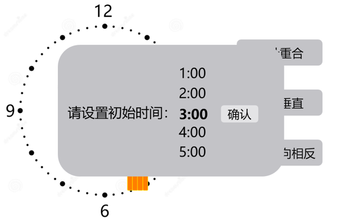
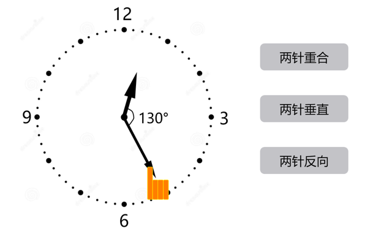

时针分针需求说明
学生端主流程
【开始游戏】
用户打开游戏，弹出选项框：请设置初始时间：9:00（可选择范围1:00～12:00，取整数），设置结束点击确认，画面时间转到用户指定时间，此时用户可以点击分针，进行转动操作，只能转动分针：
a，正转反转都可以；
b，按住分针操作，手指操作区域范围以屏幕可操作区域的宽度为半径，中心点为表盘中心点
转动之前或过程中，用户可以点击右侧任意按钮（每次可选一个），当出现按钮中情况时，给出弱提示（例如：两针变绿闪烁）
从设置初始时间开始，实时显示两针夹角度数（精确到1°，最大180°），1度之内放手吸附
指针流畅转动，不要一跳一跳
点击重置初始时间，则再次弹出请设置初始时间按钮
数据上报：出现作答正确弱提醒，即表示作答完成，没有正确率，只有完成率

拨动分针，进行观察！

拨动分针，进行观察！

重置初始时间
重置初始时间